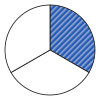

Ganzes und Teile
Mit einem KI-Tutor lernen
Ein KI-Tutor erklärt dir diese Seite und hilft dir bei den Übungen. Wähl deinen Assistenten:
Mit Claude öffnen Mit ChatGPT öffnen Mit Mistral Vibe öffnen
Du nutzt dein eigenes Konto beim Anbieter. Der Assistent ist kein Angebot von lernapps.net: lernapps liefert nur Inhalte und Übungen. Die Wahl gilt für alle Seiten, nur auf diesem Gerät.
Gerecht teilen
Nach dieser Seite weißt du, wann ein Teil von einem Ganzen einen Namen wie „ein Viertel“ bekommt. Du brauchst nur Zahlen bis 12 und das Teilen im Alltag (natürliche Zahlen auf der Lernkarte).
Drei Kinder teilen eine Pizza. Gerecht ist es nur, wenn jedes Kind ein gleich großes Stück bekommt. Dann kannst du sagen, welchen Teil der Pizza jedes Kind hat.
Das Ganze in gleich große Teile
Ein Ganzes kann eine Pizza, eine Tafel Schokolade oder ein Streifen Papier sein. Teilst du es in gleich große Teile, hat jedes Teil einen Namen. Die Bilder zeigen dasselbe Muster. Das Ganze ist jeweils die ganze Form. Der gestreifte Teil ist das, was gemeint ist.
Zwei gleich große Teile, einer gestreift: ein Halb.
Quelle: eigene Zeichnung. Lizenz: CC-BY-4.0.
Drei gleich große Teile, einer gestreift: ein Drittel.
Quelle: eigene Zeichnung. Lizenz: CC-BY-4.0.Vier gleich große Teile, einer gestreift: ein Viertel.
Quelle: eigene Zeichnung. Lizenz: CC-BY-4.0.Der Name sagt, in wie viele gleich große Teile das Ganze geteilt ist: ein Halb bei 2 Teilen, ein Drittel bei 3 Teilen, ein Viertel bei 4 Teilen, ein Fünftel bei 5 Teilen und so weiter. Wichtig ist das Wort „gleich groß“. Sind die Teile verschieden groß, ist keiner davon ein Drittel, auch wenn es drei Teile sind.
Beispiel mit einem Kuchen
Ein Kuchen für vier
Ein Kuchen wird in 4 gleich große Stücke geschnitten, für jedes Kind eins. Jedes Kind bekommt also ein Viertel. Wären die Stücke verschieden groß, bekäme kein Kind ein Viertel.
Übung
Übung
Lösung
Ja, es sind drei Teile und einer ist gestreift.
Es sind zwar drei Teile, aber sie sind verschieden breit. Ein Drittel braucht drei gleich große Teile.
Nein, die drei Teile sind nicht gleich groß. richtige Antwort
Richtig: Nur bei gleich großen Teilen heißt ein Teil ein Drittel.
Nein, es müssten vier Teile sein.
Bei vier gleich großen Teilen wäre jeder ein Viertel. Für ein Drittel braucht man drei gleich große Teile.
Die Teile sind verschieden breit. Darum ist der gestreifte Teil kein Drittel.
Mehr dazu:
Übung
Lösung
Richtige Antwort: 5
Fünftel kommt von fünf. Die Pizza ist in 5 gleich große Stücke geteilt.
Mehr dazu:
Übung
Lösung
ein Sechstel richtige Antwort
Richtig: 6 gleich große Stücke, jedes ist ein Sechstel.
ein Fünftel
Ein Fünftel gehört zu 5 gleich großen Stücken. Hier sind es 6 Kinder, also 6 Stücke.
ein Halb
Ein Halb gehört zu 2 gleich großen Stücken, nicht zu 6.
Für 6 Kinder braucht man 6 gleich große Stücke. Jedes Stück ist ein Sechstel des Kuchens.
Mehr dazu: